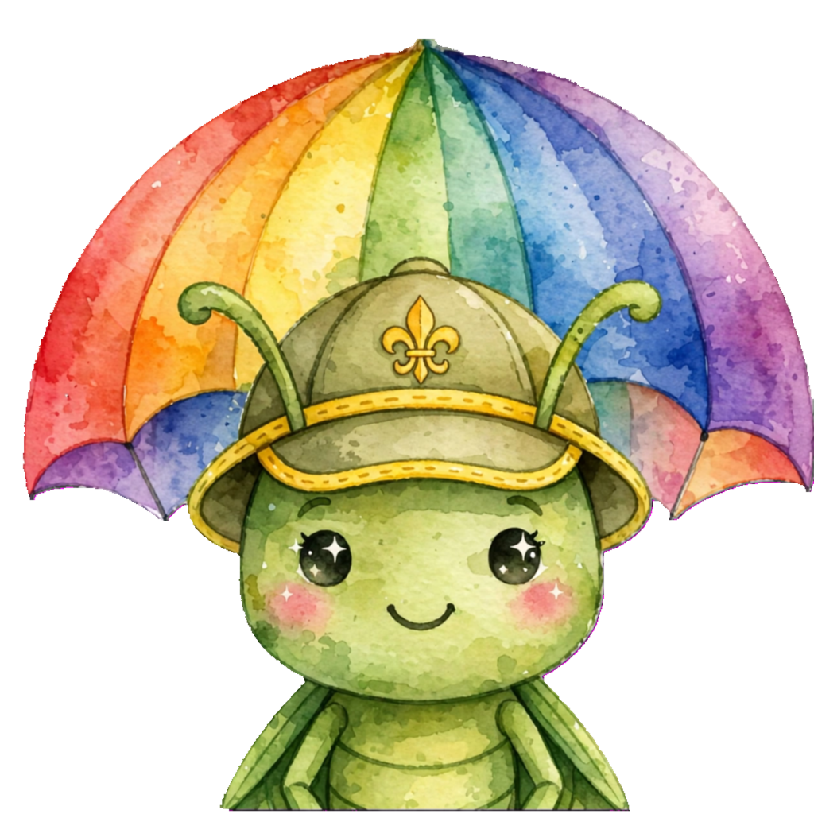
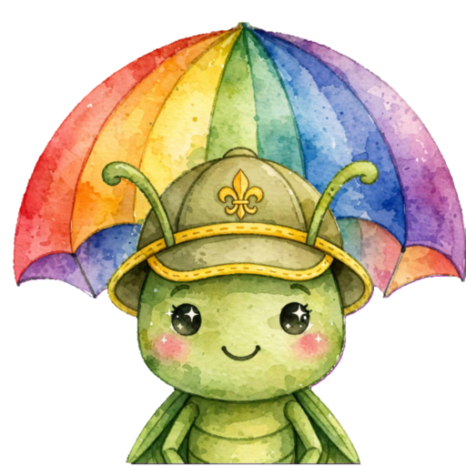
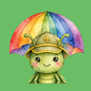
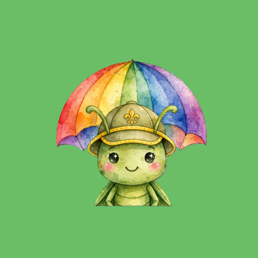

唔係工具，係陪新領袖行完整場集會嘅同伴。
由「我未準備好」到「散會」——一步都唔使自已諗。
吉祥物＝小蚱蜢戴童軍帽＋背後彩虹快樂傘，水彩繪本風，去背透明底。
原檔 img/ghmeeting_mascot.src.png（1024² 去背・未裁）→ tools/build-mascot.sh 出全套 PWA icon。
裁法用 A 全身構圖（彩虹傘完整＋草蜢全身）；後備 B 主角特寫／C 中景：CROP=C bash tools/build-mascot.sh。
三個裁法嘅實測對比喺 mascot-crop.html。

any
iOS 主畫面
Android 遮罩掉換方法：將你嘅去背 PNG 改名做 img/ghmeeting_mascot.png 蓋過，跑
bash tools/build-mascot.sh，全套 icon 即時重生。
#D9534F）只留畀真正出事。一版最多兩隻主色，其餘靠深淺。| 用途 | 設定 |
|---|---|
| 全站字型 | "PingFang HK","Noto Sans HK","Microsoft JhengHei",ui-rounded,sans-serif（系統字，離線都靚） |
| 卡片圓角 | --gh-radius: 24px（大卡／底部彈出／工具箱） |
| 按鈕圓角 | 14px（大掣）／12px（細掣）／99px（pill 標籤） |
| ICON 圓角 | 2.2px 描邊 + round linecap/linejoin（ICON 本身冇方框，靠 20% 白邊呼吸） |
filter:brightness(0) invert(1)）；emoji 感已全部換走，統一繪本線稿。round cap/join）｜
水彩填色（主色實色 + 偏移 1.2/1.8 嘅 20% 水彩溢色 + 白色高光）｜20% 白邊｜炭筆 #3A372E 描邊。<!-- sprite 由 tools/build-icons.mjs 自動注入 index.html，唔使手寫 --> <svg class="gh-ic" aria-hidden="true"><use href="#gh-plan"></use></svg> <!-- 獨立檔（Email／印刷／設計師攞貨） --> icons/svg/i-plan.svg 向量原檔（48×48 viewBox） icons/png/48/i-plan.png 介面後備 icons/png/192/i-plan.png manifest shortcuts icons/png/1024/i-plan.png 商店圖／印刷
:root{
--gh-green:#6BBE66; /* 主色按鈕・進度 ✓ */
--gh-yellow:#FFD54F; /* 高亮・重要提示 */
--gh-blue:#7AB8E6; /* 輔助・官方套包 */
--gh-paper:#FFFBF0; /* 全站背景 */
--gh-ink:#3A372E; /* 文字 */
--gh-radius:24px; /* 卡片圓角 */
--gh-green-dk:#4C9E4B; --gh-green-lt:#EAF6E6;
--gh-yellow-dk:#E9B32C; --gh-yellow-lt:#FFF6DF;
--gh-blue-dk:#3E93CB; --gh-blue-lt:#E8F3FB;
--gh-charcoal:#3A372E; --gh-paper-deep:#FFF3C8;
--gh-radius-sm:20px;
--gh-font:"Noto Sans HK","Nunito",sans-serif;
}
APP 入面舊嘅 semantic token（--or --ord --gr --grd --bg --ink --mute --line --blue）已經全部改指去呢套變數，
即係改 :root 一次就全站 200+ 處跟住轉。
| 用途 | 檔案 | 規格 |
|---|---|---|
| 主 icon（any） | icons/icon-512.png | 512² 透明，吉祥物留 6% 安全邊 |
| 主 icon（any） | icons/icon-192.png | 192² 透明 |
| Android 遮罩 | icons/icon-512-maskable.png | 512² 小童軍綠底，主角縮到 60%（安全區內） |
| iOS 主畫面 | icons/apple-touch-icon.png | 180² 綠底（iOS 唔支援透明） |
| 分頁 favicon | icons/favicon-64.png | 64² 綠圓角底 |
| shortcuts icon | icons/png/192/i-*.png | 192²，四個捷徑各用自己嗰粒 ICON |
"theme_color": "#6BBE66",
"background_color": "#FFFBF0",
"icons": [
{"src":"icons/icon-192.png","sizes":"192x192","type":"image/png","purpose":"any"},
{"src":"icons/icon-512.png","sizes":"512x512","type":"image/png","purpose":"any"},
{"src":"icons/icon-512-maskable.png","sizes":"512x512","type":"image/png","purpose":"maskable"}
]
# ① 換吉祥物：將 1024² 去背 PNG 蓋過 img/ghmeeting_mascot.png，再跑： bash tools/build-mascot.sh img/ghmeeting_mascot.png # ② 改 ICON：直接改 icons/svg/i-*.svg（唯一真相），再跑： node tools/build-icons.mjs # → 自動重生 icons/gh-icons.svg、PNG 48/192/1024、並注入 index.html 同 docs/brand.html # ③ 改色：淨係改 css/app.css 嘅 :root（同呢份手冊同步）